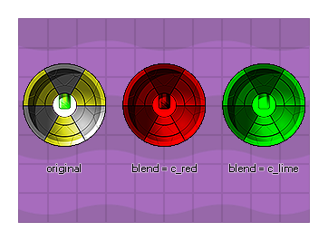

image_blend
Returns : Real
This variable controls the "tinting" of the instance sprite and the default value is -1 (but can also be c_white). Any other value (including internal color constants like c_red, or c_aqua) will
blend the specified color with the original sprite. Please note that for changes in this variable to be visible, the instance should have either no draw event (and so GameMaker:Studio will default
draw the sprite) or be drawn using one of the extended drawing functions like draw_self() or
draw_sprite_ext().

Please note that you should try to limit blending on the Windows 8 (JaveScript) or HTML5 platforms (unless using WebGL), as each blended sprite has to be cached seperately and so having many blended
sprites may adversely affect performance (you can also set the cache size using the function sprite_set_cache_size).
image_blend = make_color_hsv(255, 255, random(255));
The above code will set the image_blend of the sprite defined for the instance to a random color.